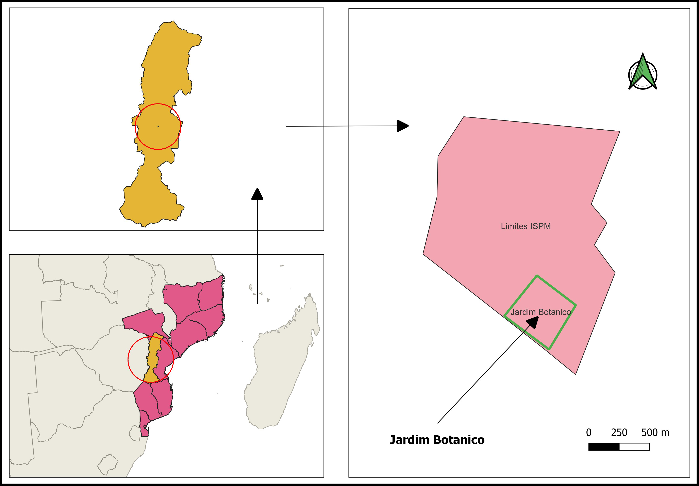

O Jardim Botânico EGFB
O Jardim Botânico do Instituto Superior Politécnico de Manica (ISPM) é uma área de conservação, ensino e investigação vinculada ao Curso de Ecoturismo e Gestão de Fauna Bravia. Funciona como laboratório vivo onde os estudantes desenvolvem práticas de inventariação de flora e fauna, identificação de espécies, caracterização de habitats e monitorização de ameaças ambientais.
O espaço permite a aplicação directa de técnicas de amostragem, levantamento florístico e faunístico, registo de dados de campo e análise da estrutura dos habitats abertos, fechados e aquáticos, preparando os futuros profissionais para o trabalho em áreas de conservação e gestão de recursos naturais em Moçambique.
Localização geográfica
O Jardim Botânico do Instituto Superior Politécnico de Manica (ISPM) localiza-se no Posto Administrativo de Matsinho, Distrito de Vanduzi, Província de Manica, região centro de Moçambique. Esta área encontra-se inserida numa zona de transição ecológica importante da África Austral, caracterizada pela predominância dos ecossistemas de Miombo, considerados um dos maiores complexos florestais tropicais secos do continente africano. O Jardim Botânico constitui uma área de conservação, ensino e investigação que permite a observação de diferentes habitats naturais representativos da região de Manica.

Caracterização biofísica da área
Clima
A região apresenta clima tropical sub-húmido, com duas estações bem definidas: uma estação chuvosa entre novembro e abril e uma estação seca entre maio e outubro. Esta sazonalidade influencia diretamente a dinâmica da vegetação, a disponibilidade de água e a distribuição dos organismos nos diferentes habitats existentes no Jardim Botânico.
Solos
Os solos predominantes associados aos ecossistemas de Miombo são geralmente arenosos a franco-arenosos, ácidos e relativamente pobres em nutrientes, especialmente fósforo e nitrogénio. Estas condições edáficas explicam o crescimento relativamente lento de muitas espécies arbóreas características da região e influenciam a composição florística dos habitats presentes no Jardim Botânico.
Hidrografia
O Jardim Botânico apresenta pequenas lagoas e áreas húmidas sazonais que desempenham papel fundamental na manutenção da biodiversidade local. Estes ambientes aquáticos funcionam como locais de reprodução para anfíbios, abastecimento hídrico para fauna terrestre e refúgio para inúmeras espécies durante os períodos de seca.